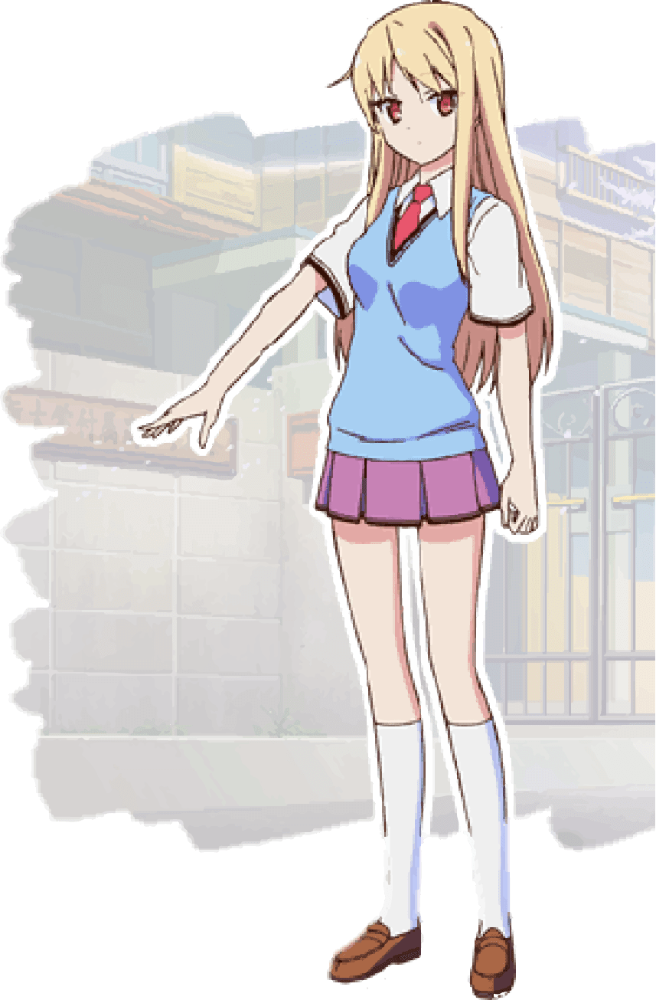
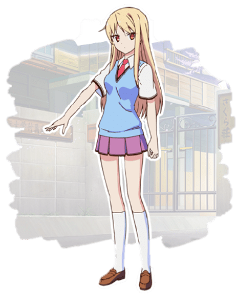

介紹


介紹
ORIGINAL CV BY


ORIGINAL CV BY
簡介
。
性別
女
。
生日
7月13
。
星座
巨蟹座
。
血型
A
。
身高
162CM
。
體重
45KG
雖然是世界有名的天才畫家， 但是想要當漫畫家所以從英國來到 日本留學美術課2年紀。 生活過得不像普通的人類。
特徵
椎名真白的身體統計數據以厘米為單位的 B79/W55/H78 和以英寸為單位的 B31/W21/H30。 體形很苗條，皮膚蒼白，紅眼睛伴著和一頭長長的金黃發，直達腰間。她經常出現在學 校制服中包括白色領短袖襯衫，紅色領帶，天藍色背心，帶有黑色條紋下擺的淺洋紅色百 褶裙，白色及膝襪和棕色正裝鞋，平時是穿著便服。
性格
椎名真白是個擁有天然黑，天然呆。她幾乎完全沒有情緒。 通常表情呆滯，說話沉悶。她嗓音柔和，是一個很少說話的女孩，因為有時她自己不確 定該怎麼想。 她都是喜歡依照自己的想法直接表達出來，從不顧別人的顧慮，所以她通常以一種非常規 的方式對情況做出反應，並以與眾不同的道德操守。例如，有時，她會給空太神田鼓舞人 心的話語，可是在別人的嚴重是一句會使別人感到困惑而不是動力十足（嘲諷）。 她可以被認為是理想主義者，能夠很容易地相信他人，並根據該人為實現目標的努力而迅 速相信他人的潛力


朋友簡介
神田空太
本作男主角。櫻花莊101號房房客，就讀水明藝術大學附屬高中普 通科2年級。擅長與他人、特別是個性強烈的人相處。國中畢業前 居住在水高附近的商店街上，因此與商店街商販間的關係非常熟絡。 在空太剛考上水高時，空太的父親被調任至老家福岡，並賣掉商店 街上的房子。堅持就讀水高的空太也因此住進了學校宿舍。 十分喜歡貓，甚至在被校長召見時，豪不猶豫地選擇了養貓，而被 趕出普通宿舍、搬進櫻花莊。目前正飼養總共七隻不同毛色的棄貓， 分別以新幹線的名字為它們取名作小光、小望、小玉、小樁、小町、 青葉和朝日。因為很會照顧別人，而被迫扛下照顧真白的責任。
青山七海
青山七海是鴨志田一創作的輕小說《櫻花莊的寵物女孩》及其衍生 作品的登場角色。水明藝術大學附屬高中普通科。因為老家在大坂， 平時說話時會帶有明顯的關西腔，夢想是聲優，為了練好標準語而 刻意封印自己的關西腔，但有時激動或緊張時說話還是會不由自主 地出現關西腔。大學的志願時演劇學部。 在高二暑假時成為櫻花莊 203號房房客。
上井草
美咲
櫻花莊201號房房客，美術科3年級學生。十年來唯一一個取得獎學 金資格的學生，美術技巧高超。喜歡動漫，自己製作了多部動畫， 引起了很大反響，賺了很多錢。雖然自身擁有非比常人的美術才能， 但太過專注於動畫的製作，被校方認為她是在糟蹋才能，因此被迫 住進櫻花莊。 精力過人，行為怪異，經常保持著過分高昂的情緒，常令空太和仁 非常煩惱。空太常常因此形容她為「外星人」。對於仁所寫的劇本 很不滿足，但是又不敢直說，因此一直壓抑著自己想做的事。直到 跟真白、龍之介一起合作時，才第一次盡情地發揮了自己的才能。喜 歡三鷹仁。但對於仁對自己在感情上冷漠，感到很難過。
三鷹仁
三鷹仁是櫻花莊103的前房客，在櫻花莊中的別稱為“夜之帝王” 同時與六個女性交往之中還包括已婚女性，由于于其女性關係的混 亂、其帥氣的外貌、花花公子的性格跟夜夜笙歌的能力，被空太稱 做“走在路上就可以讓女性懷孕”，但他本人宣稱都有做避孕然而沒 人知道到底有沒有人懷孕。

丽塔·爱因兹渥司
丽塔·爱因兹渥司不是櫻花莊的房客，她是在英國負責照顧椎名真白 ，椎名真白的朋友也是一名畫家。本來打算去日本帶椎名真白囘 英國讓她繼續展現她的藝術天賦，只因爲一些富貴的人類要求想再 次看到椎名真白的作品。 最後椎名真白覺得留下在日本繼續她的目標畫漫畫。 在櫻花莊的時候喜歡上了赤坂龍之介。
赤坂
龍之介
櫻花莊102號房房客，普通科2年級學生，程式設計師。住進櫻花莊 的原因是為了進行程式設計的工作需要大量的硬體設備，雙人宿舍 無法滿足自己的要求。是個繭居族，整天龜在宿舍房間裡，用電腦 和櫻花莊房客聯絡，據說繭居狀態下只在櫻花莊中沒有活動的人的 時候出來活動。 曾開發了一個名為“妹抖醬”的人工智慧程式。“女僕”能在龍之介忙 碌時，代替龍之介回覆信件或聯絡櫻花莊其他房客。目前正研發如 何讓女僕得以實體化。言行怪異，卻意外地和空太談得來。對於想 當上遊戲設計師的空太很多幫助，不但給他相關的教學書，還提供 了許多意見。 為了有高中的文憑，才勉為其難地去上學。認為學校只是“一群沒有 志向的人所待的地方”。外表中性，極為討厭女性，有著對女性過 敏的體質。曾兩度被麗塔親吻並陷入昏迷。相當喜歡西紅柿。